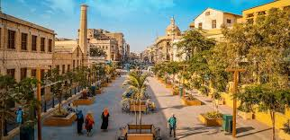
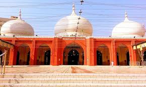
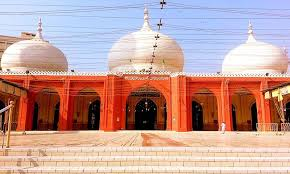

Karachi Information


Karachi is Pakistan's largest city, primary industrial/financial hub, and the capital of Sindh province. Located on the Arabian Sea, it is a diverse metropolis with over 20 million residents. Known as the "City of Lights" and "City of the Quaid," it serves as a major port and economic center, contributing significantly to Pakistan's
GDP.
Key Aspects of Karachi:
Geography and Population: Situated at the southern tip of Pakistan along the Arabian Sea, it is one of the world's most populous cities.
Economy: Known as the "City of Lights," it acts as the financial capital and industrial hub, hosting major seaports (Port of Karachi and Port Bin Qasim) and the busiest airport (Jinnah International Airport).
Culture: It is a cosmopolitan, ethnically diverse city with a rich mix of cultures, often described as a "mini Pakistan".
History: Originally a fishing village known as Kolachi (founded in 1729), it grew significantly under British rule and was the capital of Pakistan from 1947 to 1959.
Landmarks: Key sites include the Mazar-e-Quaid (tomb of Muhammad Ali Jinnah), Mohatta Palace, and Clifton Beach.
Administration: The city is governed as a municipal entity, with efforts like the CLICK project aimed at improving urban management and services.
Karachi is a fast-paced city with a bustling economy, serving as the "Gateway of Pakistan"
Karachi[a] is the capital city of the province of Sindh, Pakistan. It is the largest city in Pakistan and 12th largest in the world, with a population of over 20 million.[12][18] It is situated at the southern tip of the country along the Arabian Sea coast and formerly served as the country's capital from 1947 to 1959. Ranked as a beta-global city,[19][20] it is Pakistan's premier industrial and financial centre,[21] with an estimated GDP of over $200 billion (PPP) as of 2021.[16][17] Karachi is a major metropolitan area and is considered Pakistan's most cosmopolitan city, and among the country's most linguistically, ethnically, and religiously diverse regions,[22] as well as one of the country's most progressive and socially liberal cities.[23][24]
The region has been inhabited for millennia,[25] but the city was formally founded as the fortified village of Kolachi as recently as 1729.[26][27] The settlement greatly increased in importance with the arrival of the East India Company in the mid-b 19 th century. British administrators embarked on substantial projects to transform the city into a major seaport, and connect it with the extensive railway network of the Indian subcontinent.[27] At the time of Pakistan's independence in 1947, the city was the largest in Sindh with an estimated population of 400,000 people, and a slim Hindu majority.[22][28] Following the partition of India, the city experienced a dramatic shift in population and demography with the arrival of hundreds of thousands of Muslim immigrants from India,[29] coupled with an exodus of nearly all of its Hindu residents.[28] The city experienced rapid economic growth following Pakistan's independence, attracting migrants from throughout the country and other regions in South Asia.[30] According to the 2023 Census of Pakistan, Karachi's total population was 20.3 million.[31] Karachi is one of the world's fastest-growing cities,[32] and has significant communities representing almost every ethnic group in Pakistan. Karachi holds more than two million Bengali immigrants, a million Afghan refugees, and up to 400,000 Rohingyas from Myanmar.[33][34][35]
Karachi is now Pakistan's premier industrial and financial centre. The city has a formal economy estimated to be worth $190 billion as of 2021, which is the largest in the country.[36][37] Karachi collects 35% of Pakistan's tax revenue,[38] and generates approximately 25% of Pakistan's entire GDP.[39][40] Approximately 30% of Pakistani industrial output is from Karachi,[41] while Karachi's ports handle approximately 95% of Pakistan's foreign trade.[42] Approximately 90% of the multinational corporations and 100% of the banks operating in Pakistan are headquartered in Karachi.[42] It also serves as a transport hub, and contains Pakistan's two largest seaports, the Port of Karachi and Port Qasim, as well as Pakistan's busiest airport, Jinnah International Airport.[43] Karachi is also considered to be Pakistan's fashion capital,[44][45] and has hosted the annual Karachi Fashion Week since 2009.[46][47]
Known as the "City of Lights" in the 1960s and 1970s for its vibrant nightlife,[48] Karachi was beset by sharp ethnic, sectarian, and political conflict in the 1980s with the large-scale arrival of weaponry during the Soviet–Afghan War.[49] The city had become well known for its high rates of violent crime, but recorded crimes sharply decreased following a crackdown operation against criminals, the MQM political party, and Islamist militants, initiated in 2013 by the Pakistan Rangers.[50] As a result of the operation, Karachi dropped from being ranked the world's 6 th-most dangerous city for crime in 2014, to 128 th by 2022
Headings
This is a Main Heading
This is a Level 2 Heading
This is a Level 3 Heading
This is a Level 4 Heading
This is a Level 5 Heading
This is a Level 6 Heading
Paragraph
A burger is a popular, versatile sandwich consisting of a cooked, often grilled or fried, ground meat patty (commonly beef) served inside a sliced bun. Typically topped with cheese, lettuce, onion, pickles, and condiments like ketchup or mayonnaise, they are global staples. Originating in the 19th century with roots in Germany and the U.S., they are now a mainstay in fast food and dining.
Bold
- Bold
Italic
- Italic
Superscript
9th
10th
Subscript
Co2
2ppm
Br
The Earth
gets one hundred tons heavier
every day
due to falling space dust.
Hr
Venus is the only planet that rotates
clockwise.
Jupiter is bigger than all the other planets
combined.
Strong
Beware: Pickpockets operate in
this area.
This toy has many small pieces and is not
suitable for children under five years old.
Em
I think Ivy was the first.
I think Ivy was the first.
I think Ivy was the first.
Blockquote
Did you ever stop to think, and forget to start
again?
As A.A. Milne said, Some people talk to
animals. Not many listen though. That's the
problem.
Quotation
Some people talk to
animals. Not many listen though. That's the
problem.
Abbr
Prof Stephen
Hawking is a theoretical physicist and
cosmologist.
NASA do some crazy
space stuff.
Cite
A Brief History of Time
Dfn
black hole
Address
homer@example.org
742 Evergreen Terrace, Springfield.
Ins & Del
It was the worst best idea
she had ever had.
S
Laptop computer:
Was $995
Now only $375
Ordered List
- Makkah
- Madina
- Pakistan
Unordered List
Nested List
Definition List
... [dl]
Definition Title
... [dt]
Class Room
Definition Data
... [dd]
-
- Monday
- Tuesday
- Wednesday
- Thursday
- Friday
- Saturday
- Sunday
Anchor Tag:
[A]
Absolute Link
Relative Link
- about page
- contact page
- service page
Mailto:
Email Jon
Target
Internet Movie Database (opens in new window)
Img
 
